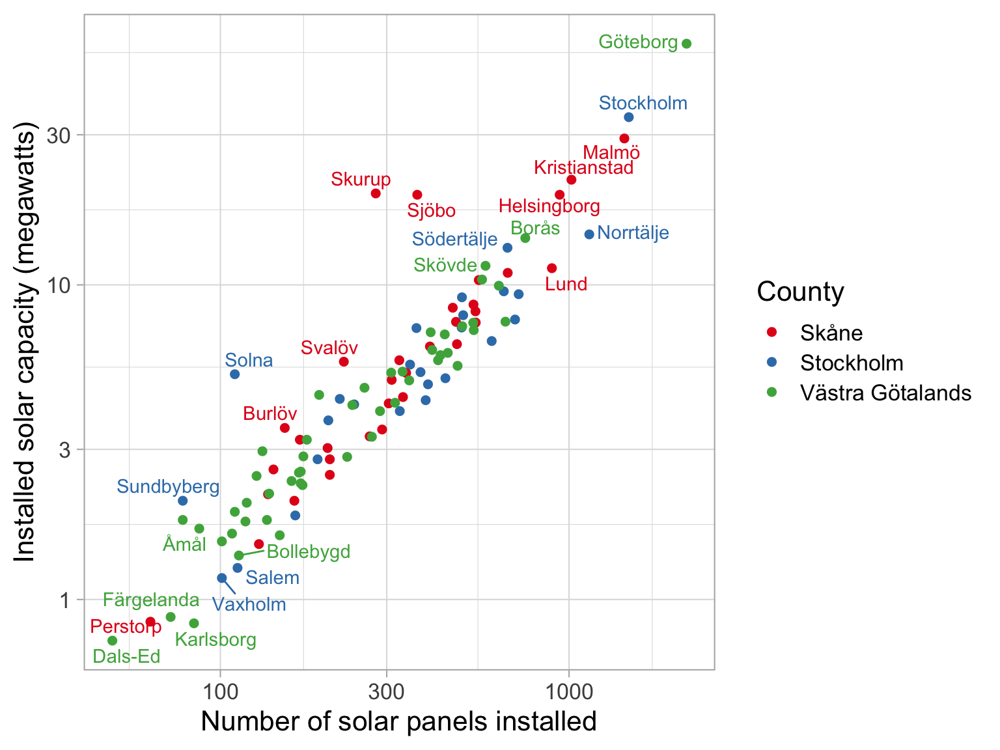
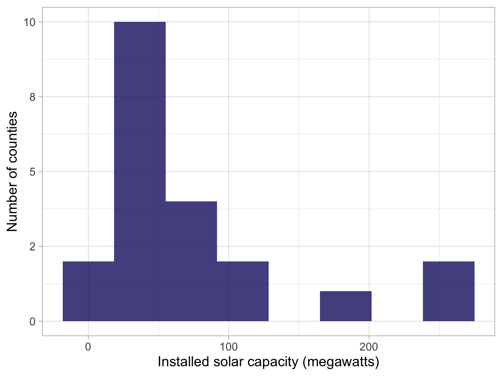
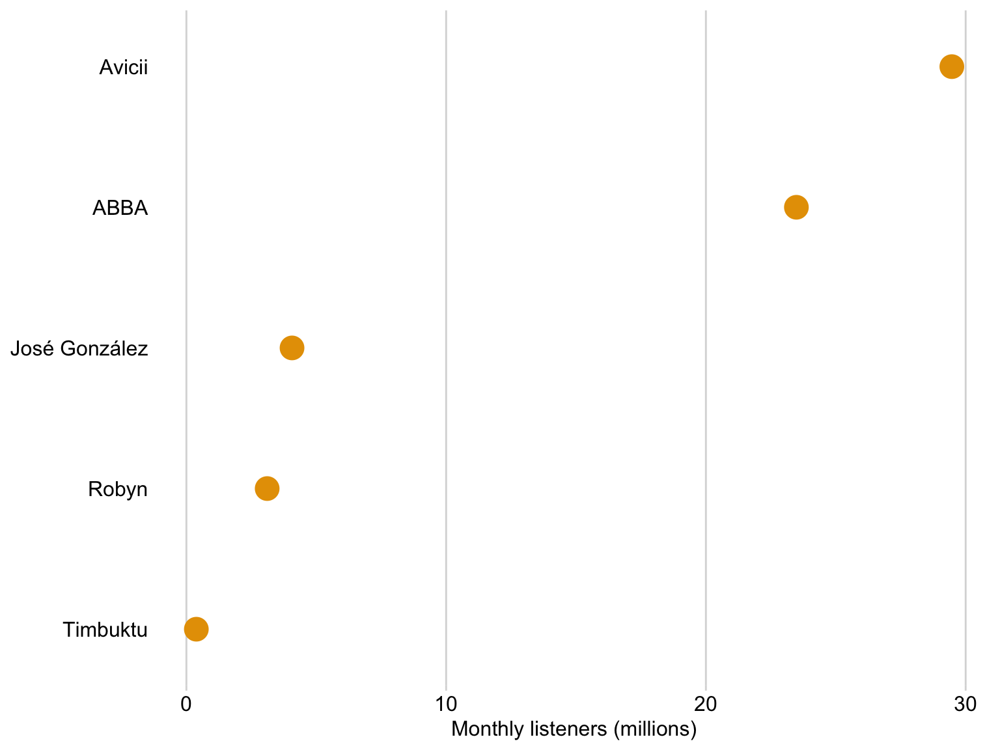
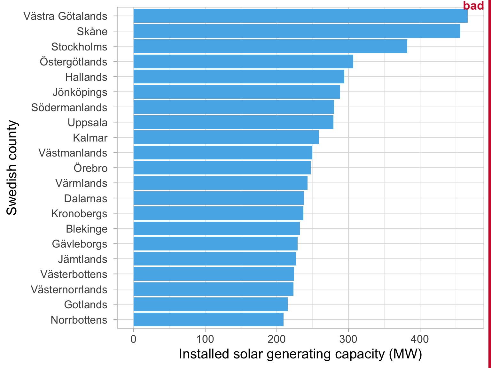
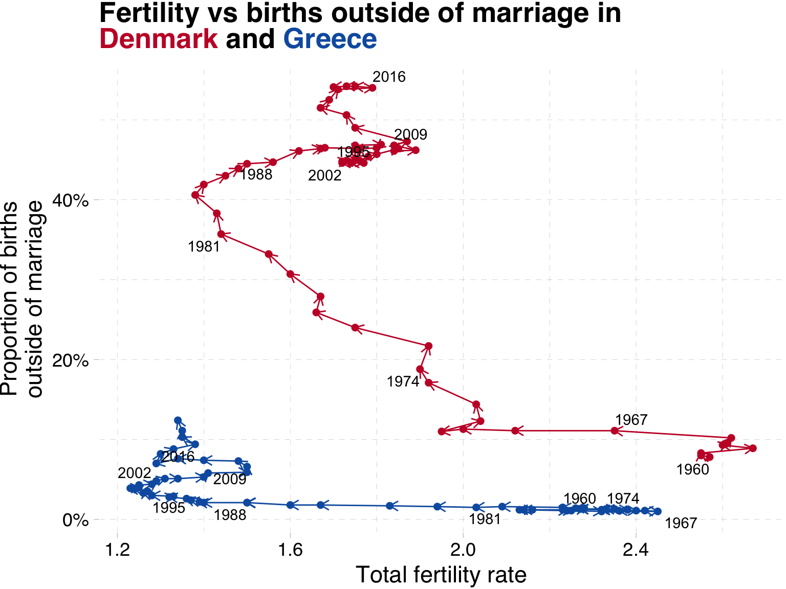
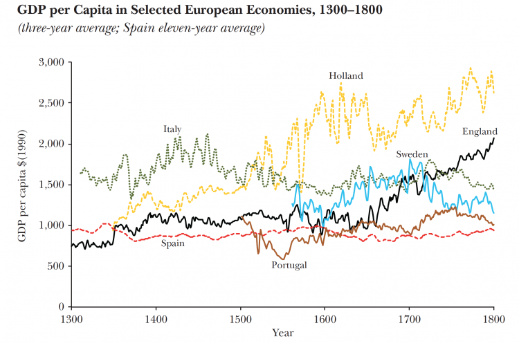

Data visualization
Purpose
Get you excited about storytelling with data
Show some tips and tricks to make your maps and charts pop
This is not about the software. Rather, it is about the theory behind communicating well with data
Structure
Improving your maps
Overcoming Excel
Telling a story with data
Reproducing figures for publication
A cartoon in the style of Aardman Animations depicting an animatronic computer fighting with a spreadsheet, vibrant green lighting
Everything is a story

Dan Harmon’s Story Circle

Our Story Circle
Zone of comfort: Data in excel
Want something: to be better at communicating with your data
Enter an unfamiliar situation: Looking closely at maps and charts
Adapt to it: Practice discussing the differences
Get what they wanted: Banging chart skills
Pay a heavy price: Hard to concentrate - relax with an inspiring video
Return to familiar situation: your projects
Having changed: I hope you learn something.
Improving your maps
Legend breaks
Recap from Lab 1 exercies
Make a map of the share of employment in industry in the year 2010 across the whole dataset
Recap from Lab 1 exercies
What is wrong with this map? üó∫Ô∏è
Recap from Lab 1 exercies
01:00
Discuss with your neighbour:
What do we like?
What is confusing?
spmap employment_share_industry using "nutscoord.dta"
if year == 2010,
id(_ID) fcolor(Spectral) legstyle(2)
title("Employment Share Industry - 2010", size(large))
osize(0.02 ..) ocolor(white ..)
clmethod(custom) clbreaks(0 (0.2) 1)
legend(pos(9) size(medium) rowgap(1.5)
label(6 "80-100 %") label(5 "60-80 %")
label(4 "40-60 %") label(3 "20-40 %") label(2 "0-20 %")
label(1 "No Data"))
ndfcolor(gray) ndocolor(white ..) ndsize(0.02 ..)Let’s plot the disribution of the data

histogram employment_share_industry if year == 2010,
color(midblue)Let’s plot the disribution of the data

kdensity employment_share_industry if year == 2010Now let’s make breaks based on this information

spmap employment_share_industry using "nutscoord.dta"
if year == 2010, id(_ID) fcolor(Spectral) legstyle(2)
title("Employment Share Industry - 2010", size(large))
osize(0.02 ..) ocolor(white ..)
clmethod(custom) clbreaks(0 (0.075) 0.5)
legend(pos(9) size(medium) rowgap(1.5)
label(7 "37-45 %") label(6 "30-37 %")
label(5 "23-30 %") label(4 "15-23 %")
label(3 "8-15 %") label(2 "0-8 %")
label(1 "No Data"))
ndfcolor(gray) ndocolor(white ..) ndsize(0.02 ..)Colour scales
Uses of color in data visualization
. . .
|

|
Qualitative scale example

Palette name: Okabe-Ito
Qualitative scale example
Palette name: Brewer Set1
Qualitative scale example

Palette name: Brewer Dark2
Uses of color in data visualization
|
|
|

|
Sequential scale example

Palette name: inferno
Sequential scale example

Palette name: viridis
Uses of color in data visualization
|
|
|
|
|

|
Diverging scale example

Uses of color in data visualization
|
|
|
|
|
|
|

|
Highlight example

Using density plots to set your legend breaks: quick example
Dataset: Solar panels in Sweden
| Installed solar capacity in Sweden | |
|---|---|
| Year: 2021 | |
| Swedish county | Installed solar capacity (megawatts) |
| Source: Energimyndigheten | |
How to decide on values for the bins?
Use a histogram or a density plot to see where the weight of the distribution is.

Map with appropriate breaks
Ask your neighbour:
what kind of palette is this?
Is it appropriate to use with this data?
01:00

Improving your maps
Great Choropleths
Examples of great maps
Financial Times analysis of Italian election results in 2018
Maps work best when they show an emerging spatial pattern, as was the case with this map from the recent Italian elections.
Showing the winner at municipality level clearly shows the political divisions in the country. In the north, the Northern League party triumphed largely on the back of an anti-immigration and anti-EU agenda. In the south, the anti-establishment Five Star Movement was even more successful, gaining a majority of votes in many areas
Examples of great maps
Financial Times analysis of Italian election results in 2018

Another interesting take on the results was to show the per cent share of vote. This helped to emphasise just how strong the support was for the two parties.
Examples of great maps
Human Terrain from The Pudding
Examples of great maps
The Coming Crisis: Exploring the U.S. Physician Shortage by Daniel Snow
Overcoming Excel
Motivation
Overcoming Excel

Excel itself is not a bad tool.
It is very popular! See the info on jobs that require it.
Overcoming Excel

Formby et al (2017) Microsoft Excel: Is It An Important Job Skill for College Graduates?
Overcoming Excel
Takeaways:
You will likely use Excel in the future üìä
Excel‚Äôs default plots and tables can be improved upon üìà
Simple rules can help you make your message clear üíé
Overcoming Excel
Charts
Overcoming Excel: Column plot
We often encounter datasets containing simple amounts ü§è
Here is some data on a sample of Swedish musical artists üéµ
I put this data into Excel, and asked for a recommended chart üìä
| Swedish musical artists | ||
|---|---|---|
| Rank | Artist | Monthly listeners (m) |
| Datasource: Spotify charts Nov 2022 | ||
Your turn
02:30

Discuss with your neighbour:
What do we like?
What is confusing?
Tip 1: Avoid rotated axis labels
Ugly ü§¢
Tip 1: Avoid rotated axis labels
Flip axes so that the text is easier to read üëì

Tip 2: Pay attention to the order of the bars
Bad üëé
Tip 2: Pay attention to the order of the bars
It is clear that José González recieves more streams than Robyn

Tip 3: Consider your titles, labels and axes
Uninformative️ ❗
Tip 3: Consider your titles, labels and axes
Note the title, x-axis title, x-axis labels üìô

Tip 3: Consider your titles, labels and axes
Titles and captions have different application areas

We can use dots instead of bars

We can use dots instead of bars

Dots are preferable if we want to truncate the axes
Dataset: Solar panels in Sweden
Dots are preferable if we want to truncate the axes

Bar lengths do
not accurately
represent the
data values
Dots are preferable if we want to truncate the axes
Key features
of the data
are obscured
Dots are preferable if we want to truncate the axes

Overcoming Excel
Tables
Overcoming Excel: Tables
We often encounter datasets containing simple amounts ü§è
Here is some data on a sample of Swedish musical artists üéµ
I put this data into Excel, and asked it to insert a table üóÉÔ∏è
| Swedish musical artists | ||
|---|---|---|
| Rank | Artist | Monthly listeners (m) |
| Datasource: Spotify charts Nov 2022 | ||
Your turn again
02:30

Discuss with your neighbour:
What do we like?
What is confusing?
Let’s apply these rules
01:30
| Key rules for table layout | |
|---|---|
| Number | Rule |
| Source: Claus Wilke’s Fundamentals of Data Visualization | |


Let’s apply these rules
01:30
| Key rules for table layout | |
|---|---|
| Number | Rule |
| Source: Claus Wilke’s Fundamentals of Data Visualization | |


Storytelling with data
Related time series
An alternative: time on a third axis

What have we learned?

Both countries saw a large drop in fertility from the 1960s until the 1980s
In Denmark, after 1970 we see an increase in the share of children born outside of marriage
In contrast, Greek families have relatively few children outside of marriage.
After 1990, Danish fertility increased from 1.3 to 1.8, while Greek fertility remained at ‘lowest-low’ levels, below replacement.
What have we changed?

Indicators on the x- and y-axis and then show time with text labels
Legend is replaced with colour coded title
Colours have meaning (main colour of country flag)
Percentage labels on the y-axis
Storytelling with data
Giving context
Giving context
Sometimes we may want to show a particular series of data in its correct context.
For instance, in our line graph above which showed the evolution of the share of births outside of marriage in Denmark and Greece, we might want to know if these two represent the extremes within Europe.
Giving context
Do Denmark and Greece represent the extremes of the share of children born outside of marriage in Europe?
Giving context with an average
One way to do this would be to show an average for Europe

Giving context with an interval ribbon

Giving context with all of the data
This is silly

Giving context with all of the data
Here we highlight the series we are interested in and draw in the remaining series in grey

What have we changed?
Shows each of the series
We can see that Denmark is a leader in the beginning, but is caught up by other nations
Does not hide outliers
Makes clear the trends in your countries of interest
Storytelling with data
Tips for polished figures
Tips for polishing your figures
Where to get great colours from for your plots:
help spmap # Look for the palettes under fcolorRecreating published figures

Recreating published figures